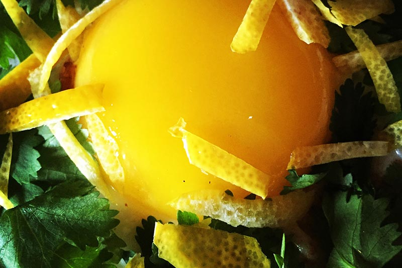
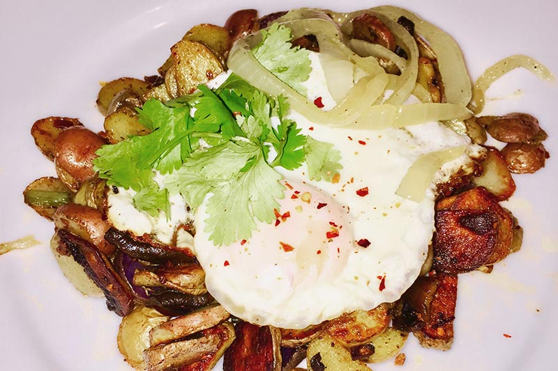
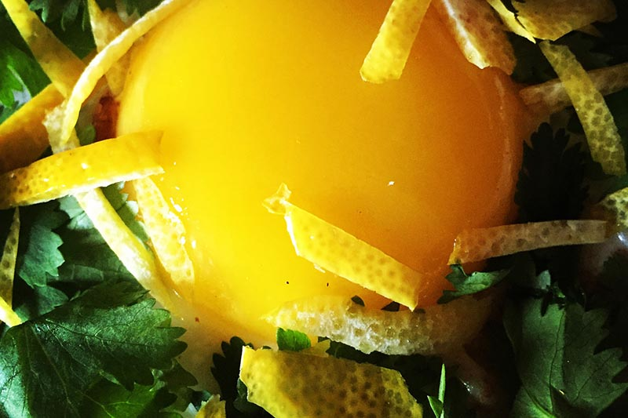
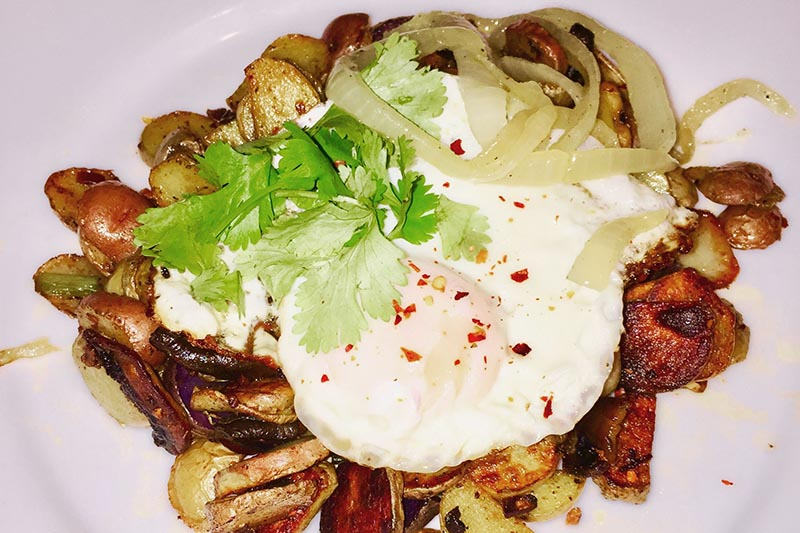
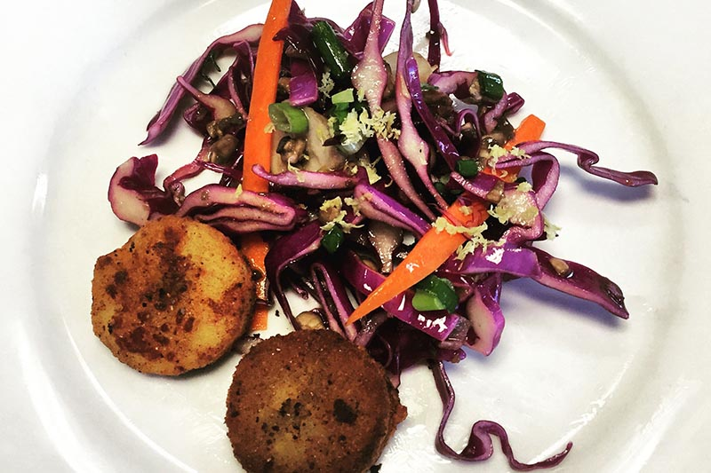
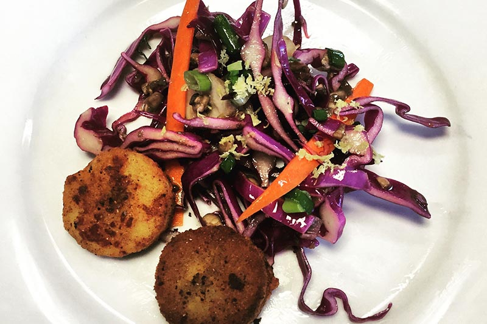

Enjoy various cuisines from around the world as presented by Missy’s Gourmet. Your experience will be stimulated by Missy’s own contemporary take on classic, old world dishes.
Enjoy


 



 

Missy graduated from the Auguste Escoffier School of Culinary Art, in Colorado. Upon graduation she explored the culinary world gaining experience as a prep cook, line cook/garde manger, personal chef and caterer.
Missy believes the most flavorful cuisine is made with a harmony of flavors and textures. Her understanding of flavor balance and her uniquely creative energy play an important role in the building of her menus and composition of her own unique impressions of classic cuisine.